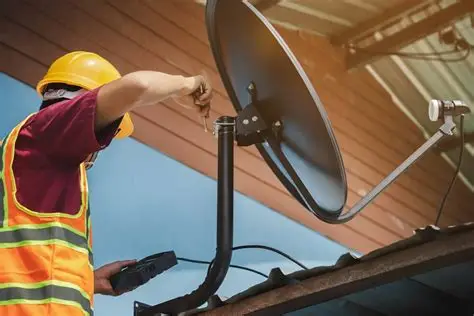
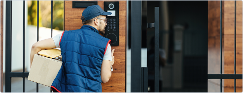

القاهرة, مدينة نصر, الزهراء
كود تفعيل ريسيفر نوفا برو

فني دش إنجزها هو من أفضل الفنيين المتخصصين في تركيب وصيانة أنظمة الرسيفر والدش، فهو يتمتع بالخبرة والكفاءة والمعرفة في التعامل مع كل أنواع الأطباق، كما يتعامل مع كل المعدات وأجهزة الرسيفرات اللازمة لتشغيل وتثبيت بكفاءة وجودة عالية، كما يقوم بتحديد الموقع الملائم لتركيب الطبق، وأيضًا يعمل على تثبيت الحامل بشكل محكم وتوصيل الأسلاك والكابلات لضبط الإشارات واستقبال بجودة عالية وقوة الإشارات التلفزيونية.
فني دش
يقوم بتوفير خدمات التصليح والصيانة جميع المشاكل والأعطال التي قد تحدث في أنظمة الرسيفر والدش، وتعتبر مهارات وكفاءات فني تركيب دش ضروري لضمان تجربة ممتعة وشيقة لمشاهدة التلفاز بمتعة وأريحية لكل العملاء، عليكم بالتواصل مع شركتنا التي تقدم خدمات التركيب لكل أنظمة الأجهزة المرتبطة والريسيفر والدش.
يقوم فني دش توفير خدمات عالية الجودة والانتشار العامة في أكبر الأحياء، ولدينا نسبة كبيرة من العملاء لذا يتم توفير عدد كبير من مهندسين الدش على أعلى مستوى من الكفاءة والخبرة، كما يقوم فريق خدمة العملاء بتحديد منزل أو مكان العمل واختيار أقرب فني الدش قريب منه وكل المناطق المحيطة به.
صيانة الدش والريسيفر
صيانة الرسيفر والدش الآن بمنزلك من خلال فريق عمل متخصص ويحترم المواعيد وسرعة أداء الخدمة، ولدينا فروع كثيرة ومنتشرة في جميع الأنحاء لخدمات صيانة وتصليح الرسيفر، فروع صيانة الدش قريبة منك، فإن شركتنا تمتلك الخبرة في حل جميع المشاكل والأعطال الدش بواسطة توفير فنيين متخصصين ومحترفين لحل كل أعطال الدش بشكل نهائي واستعمال قطع الغيار المستوردة والمضمونة.
يستقبل الإشارة الرقمية وتحويلها إلى إشارة تلفزيونية، وتستعمل من أجل تشغيل شاشات التلفاز، كما أن أنظمة الستالايت والدش تشكيلة كبيرة وواسعة من القنوات الأفلام والترفيهية والرياضية العالمية والمحلية، يعتبر الستالايت والدش خيار أكثر انتشارًا بالمجمعات السكنية والمنازل والتي تريد الاستفادة من مجموعة كبيرة من القنوات بصوت وصورة واضحين وعالي جودة.
شاشات التلفاز داخل المكان أو المنزل، ثم يتم اختيار عدد أمتار من الأسلاك بناء على لون السلك أسود أم أبيض وعدد الطوابق وفي النهاية يتم توليف الرسيفر مع شاشة التلفاز أيا كان الرسيفر خارجي او داخلي للاستماع بالمشاهدة مع العائلة والأصدقاء بكل ما جديد.
يتم عمل بحث مستمر لكل الأقمار الصناعية بشكل كامل والبحث عن كل الترددات، بعد تركيب طبق الدش بشكل كامل بمختلف الأنواع، ينقسم أطباق الدش هم نوعان طبق دش مركزي وطبق دش فردى، ويتم تركيب الطبق بواسطة فني دش ذو خبرة وكفاءة طويلة وكذلك تركيب العدسة بالطبق سواء في البلكونة أو على السطح، باستخدام الجبس أو الأسمنت ثم يتم تنزيل السلك من أعلى لأسفل أو الجهة تركيب توليف وتركيب الشاشة مع الرسيفر.
ما هي أفضل شركة تركيب دش ولماذا؟
بمجرد حدوث أي عطل في الإشارة تستطيع الصيانة والتصليح من خلال الاتصال مع الشركة عن طريق أرقام هواتف المحمول أو الواتساب وسوف يتم الرد عليكم من قبل مهندس متميز ومدرب لكي يفهم العطل أو المشكلة، وإذا كانت بسيطة يقوم بحلها عن طريق الهاتف، وإذا كانت صعبة سوف يتم إرسال فني تصليح وصيانة دش متخصص.
فني تركيب وصيانة جميع أطباق الدش
التواصل مع الشركة عن طريق الواتساب و الفيسبوك واي صفحه من صفحات التواصل الاجتماعي
الخاصة بشركتنا، كما تستطيع التواصل عن طريق البريد الإلكتروني الخاص بالشركة أو من خلال زيارة المقر الرئيسي لها للتعرف على كل التفاصيل والخدمات والعروض والأسعار.بمجرد اتصال العميل على الشركة يقوم فني دش بتوضيح كل الخدمات والتفاصيل المتعلقة بتركيب وصيانة دش والخدمات التي توفرها الشركة إلى كل العملاء حتى يكون العميل على علم ودراية بكل التفاصيل بمنتهى السهولة والبساطة، والاتفاق على الأسعار، نحن نسعى لإرضاء جميع العملاء.